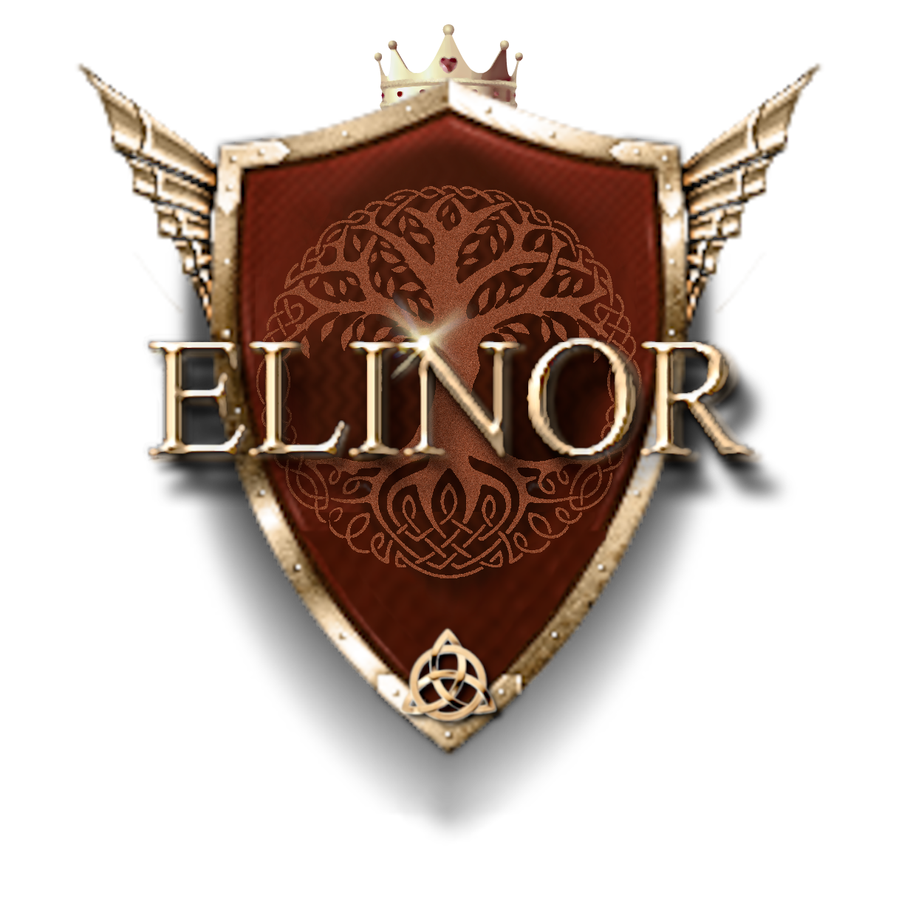
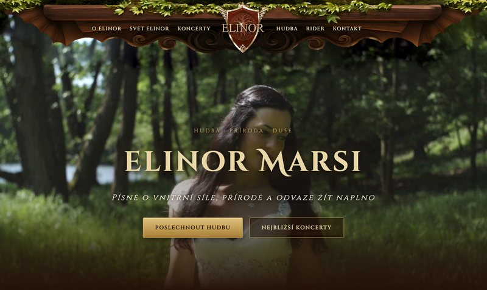
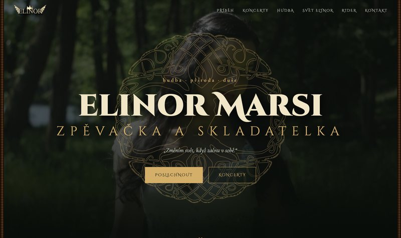
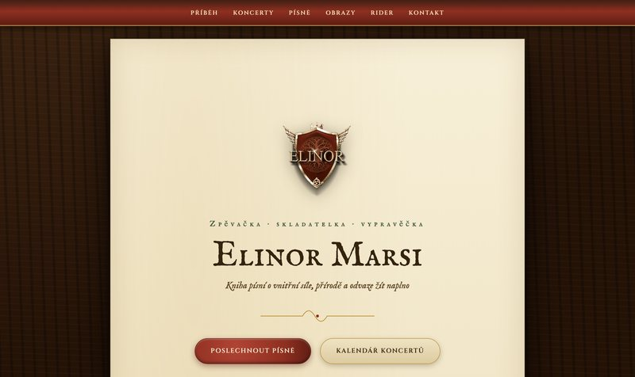

Pokračujeme Návrhy 1 a 2 — náhledy ukazují nejnovější verzi každého návrhu.

Věrná modernizace schválené grafiky: vyřezávaný dřevěný portál s erbem nad lesem, zlatá písma a pergamenové stránky. Nejblíž původní vizi.

Filmový tmavý vzhled jako u světových interpretů — noční les, zlatý kruh stromu života, dřevěné lišty po stranách. Nejvíc „koncertní“.

Web jako iluminovaná kniha položená na dřevěném stole — kapitoly, ozdobné iniciály a pečetě. Příběh „Bylo nebylo…“ vypráví sám web.